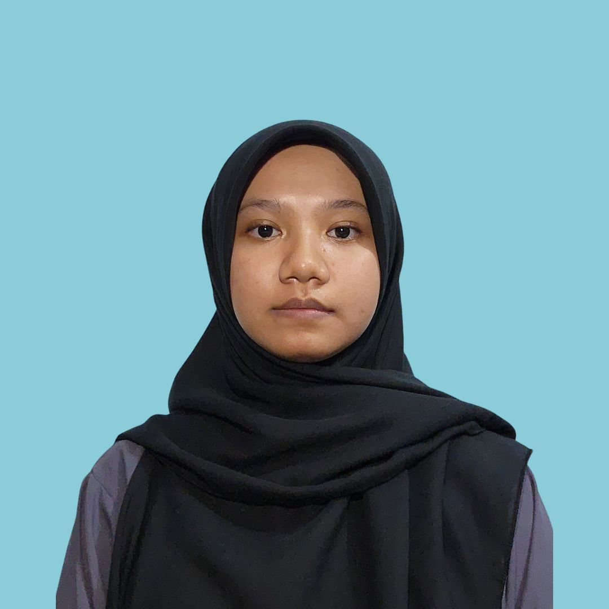

Building secure, scalable, and modern software solutions with a security-first mindset. Passionate about cybersecurity, secure coding practices, cloud security, and modern application development.

Hello! I’m Sidratul. I am presently enrolled at Universiti Sultan Zainal Abidin (UniSZA) pursuing a Bachelor of Computer Science with Honors in Internet Computing.
As a student developer, I am very excited about making practical applications of software that can help overcome day-to-day difficulties. Though my experience is mainly from working with basic web engineering tools such as Laravel and CodeIgniter, having gone through studies on Internet Computing, I now understand that having good functionality alone will be useless without proper security. This has motivated me to acquire programming skills from a security perspective, involving sessions, routes, and other data handling techniques.
“Where Secure Logic Meets Meaningful Innovation.”
Security-focused software developers build applications with cybersecurity principles integrated from the beginning. This role combines programming expertise with security awareness to protect systems from vulnerabilities, attacks, and data breaches.
A practical balance of problem-solving methods and communication channels needed to write software code that is both highly functional and structurally reliable.
My Current Status: Able to develop and structure robust backend logic, manage database interactions using Laravel and CodeIgniter, and design mobile interfaces using Ionic.
Target Expectation: Actively conducting defensive codebase audits, managing threat modeling scenarios, conducting security architecture assessments, and building enterprise code pipeline checks.
My Current Status: Solid core knowledge of baseline Internet Computing theory, network protocols (TCP/IP, HTTP/S), session tokens, routing filters, and running basic packet inspections via Wireshark.
Target Expectation: Configuring system boundary isolation policies, micro-segmentation architectures, real-time threat hunting behaviors, and auditing identity control access management lists.
Developed a secure marketplace transaction ecosystem specifically designed for university campus students, embedding custom security-first handling boundaries.
Designed and programmed a responsive health tracking dashboard application featuring strict data type validation, preventing data injection or cross-site compromises.
Studying Internet Computing at Universiti Sultan Zainal Abidin (UniSZA) completely transformed my perspective on application engineering. Initially, my goals focused simply on constructing practical tools that function correctly. However, understanding network layers and application vulnerabilities taught me that functionality without secure design principles is inherently fragile. Acquiring skills in defensive coding techniques—ranging from route encapsulation to secure session handling—has shaped my standard development workflow into a security-first discipline.
Dell Technologies stands out as an optimal target employer because of its comprehensive commitment to secure infrastructure engineering across hardware, software, and cloud application domains. Entering Dell's collaborative workspace as a junior developer provides an ideal platform to match my defensive mindset with sophisticated enterprise systems.
Dell's dedication to embedding advanced cyber defense measures transparently into global business technology lines completely matches my personal technical mission statement: proving that software logic must be built defensively right from day one.
I offer a reliable combination of fundamental programming logic combined with an active focus on potential threat vectors. While standard development candidates frequently approach security constraints as an secondary phase, my academic training ensures that basic controls like authentication flows and input validation form the baseline architecture of my source code.
I bridge the gap between traditional backend programming and proactive threat awareness, minimizing codebase vulnerability windows throughout production sprints.
Strengths: Practical experience using standard model-view-controller systems (Laravel, CodeIgniter), combined with clean relational database organization and structured security thinking.
Weaknesses: Limited practical familiarity handling enterprise-scale live system network attack data, which I am actively addressing through laboratory practice matching the CompTIA Security+ learning path.